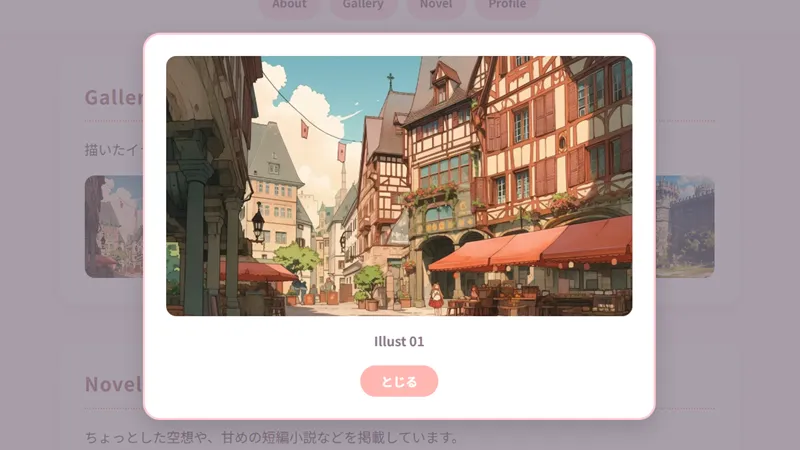
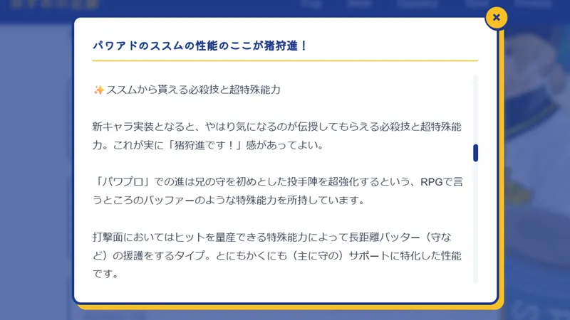
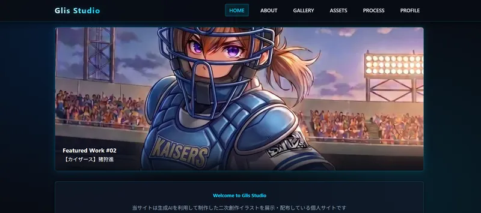
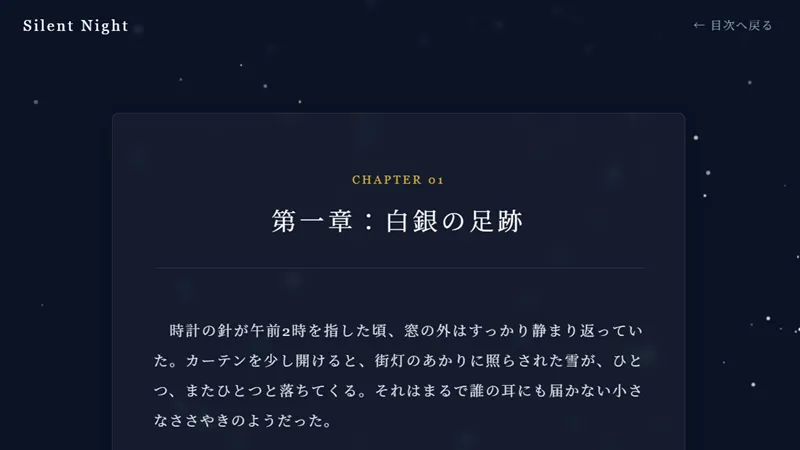
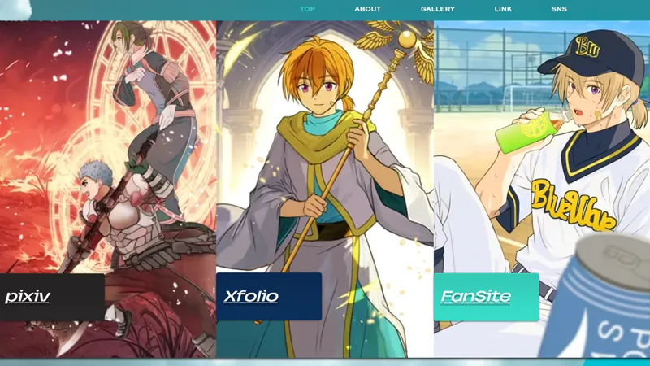

小説＆イラストの掲載方法まとめ
いまから個人サイトを作成しようというときに、「作品をどのようにして掲載するか」という点で悩んだことはありませんか？
「手軽さ」をとるか「デザインのこだわり」をとるかはもちろん、イラストと小説で主流となる掲載方法や向き・不向き、作成の難易度が異なるのも悩むところです。
この記事では、個人サイトでよく使われる代表的な掲載方法を4つピックアップしました。各方法の難易度や必要なWebの知識についても触れていますので、自に合いそうなものを見つけてみてくださいね。
※このページに掲載しているサンプル画像は、当サイトで配布しているテンプレート、もしくは管理人の別サイトのスクリーンショットです。
📷 実際の表示例もまとめました
一覧のサムネイルやタイトルをクリックすると、ページを移動せずに画面上にふわっとウィンドウが浮かび上がって作品が表示される方法です。
📷 モーダル表示のイメージ例

イラスト：画面切り替えなしで拡大

小説：.txtファイルを直接読み込み
【王道・定番スタイル】
画面を切り替えずに大きな画像を見せられるため、イラストが主体のサイトでは超・定番の手法です。サクサク閲覧ができるので、観覧者にとってもストレスがありません。
【短編向けの変化球】
モーダル内にテキストファイル（.txt）を直接読み込ませることで、「ページ移動なし」「文章のフォーマット（HTML化）なし」で読ませる工夫ができます。手軽さとサイトデザインの統一感を両立できます。
💡 設置さえしてしまえば編集はサクサク
管理人が別サイト（画像2枚目）で取り入れている方法がこちら。テキストファイルをアップロード → モーダルをコピペで増やしてファイル名を変更する …というように、画像と同じ感覚でテキストを掲載できます。
イラストの場合： 既にモーダルが設置されている配布テンプレートを使用する場合でも、HTMLを書き換える箇所が多めです。「どことどこを編集すればいいのか」「どこからどこまでをコピーすれば作品枠を増やせるのか」が判断できる方向けと言えます。
小説の場合： そもそも「小説の表示を目的としたモーダル」が配置されているテンプレートはほとんどありません。自分でHTML/CSS/JavaScriptを編集してモーダルを設置・調整する必要があるため難易度は高くなりますが、そのぶんサイトの個性をグッと引き出せます。
作品ごとに1つのHTMLファイルを作成し、デザインしたWebページ内に直接画像や文章を配置していく方法です。
📷 Webページ表示のイメージ例

イラスト：スライドギャラリーで動きのあるページに

小説：背景にアニメーションを設定することも
【作品の世界観を魅せる展示】
1枚のイラストをドカンと大きく見せたり、スライドのように次々と見せたり、ページ内に敷き詰めたりと、さまざまな演出を取り入れた個展のようなページが作れます。
【こだわり派の標準スタイル】
作品ごとに背景色やフォントを変えたり、挿絵を差し込んだりと、世界観の演出を自由自在に作り込めます。こだわり派さんにぴったり。
<br> タグを入れたり段落を整えたりする作業（HTML化）が必要です。また、作品数が増えるほどファイル管理のコツが必要になります。難易度のポイント： 「小説に改行タグをつける」「画像のファイル名を差し替える」といった初歩的なHTMLの知識が必要になります。そのため「HTMLを一切触らずにサイトを作りたい」という方には向きませんが、「これからHTMLを勉強してみたい！」という方の入門編として非常におすすめです。
ブログのように管理画面から記事を投稿・管理できるサービスやツールを使う方法です。
代表的なツール・サービス例
・汎用ツール： WordPress、Wix など
・創作特化型サービス： フォレストページ＋、ナノ など（サーバーに作品投稿機能が標準装備されています）
【ログ・漫画・日々の落書きに】
ワンドロのまとめ、複数ページの漫画、日常のイラストログなどをサクサク投稿するのに向いています。
【手軽さ＆管理重視の万能型】
スマホからでも簡単に投稿・修正ができるため、更新頻度が高い人や長編小説の連載に最適です。
難易度のポイント： 一般的な投稿サイトやブログと同じ感覚で作品を投稿できるのでとてもお手軽です。サービスによっては全くHTMLに触れることなく運用できます。ただし、利用するツールやサービス独自の管理画面・使い方に慣れるまでに多少の手間がかかる場合があります。
「サイトのデザインは作り込みたいけれど、本文や画像の管理は外部に任せたい」という場合、外部の投稿ツールを上手につなぐ方法もあります。
📷 外部連携のイメージ例

サイトのデザインにこだわりつつ作品の管理は楽に
【まとめ・ポートフォリオ化】
メインの活動場所（Pixiv、Xfolio等）に画像をアップしつつ、自分のサイトは「代表作をまとめた看板（ポータル）」として機能させます。
【連載小説のまとめなどに】
投稿サイトでは投稿日時順に並べられる場合が多い作品を、リストにして作中の時系列順に並べたりすることができます。
難易度のポイント： 基本的にはページ内にリンクを貼るだけなので設置や更新がとても簡単です。外部サービス側にも「シェア用のURLをコピーする機能」が備わっていることが多いため、特定の作品や投稿にピンポイントでリンクを貼りたい場合も手軽に行えます。
作品の種類やご自身の好みに合わせて選んでみてくださいね🐾